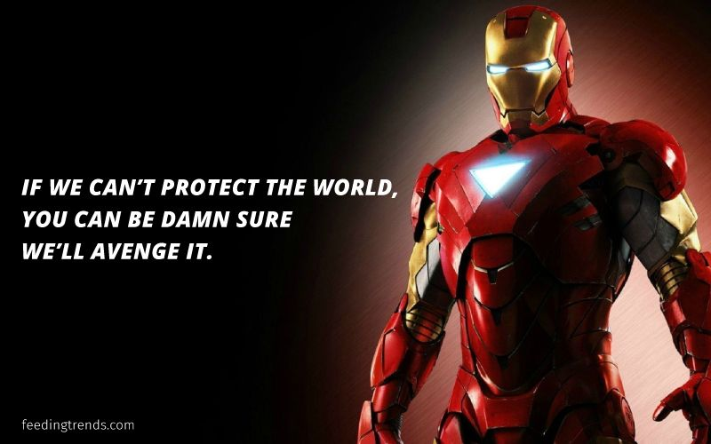

Robert John Downey Jr. is an American actor and producer. His career has been characterized by critical and popular success in his youth, followed by a period of substance abuse and legal troubles, before a resurgence of commercial success later in his career.
Timeline of Robert Downey
1965 — Robert Downey Jr was born in New York City April 4, 1965
1970 — Downey made his film debut playing a puppy in his father's film, Pound (1970), in which actors played dogs
1985 — Sadly, the story line and character rang especially true for Downey, who had been introduced to drugs at the age of eight by his father, and developed a full-fledged addiction as he headed into his 20s.
1991 — Downey had established a reputation as a critically acclaimed A-List actor. He earned praise for his comic turn as a shifty soap opera producer in Soapdish
2001 — On April 24, 2001, Downey was arrested for allegedly being under the influence of an undisclosed "stimulant." Downey's personal life was in turmoil, too, as Falconer sued him for divorce in 2004.
2005 — He married producer Susan Levin in 2005
2008 — He played the wealthy industrialist-turned-crime fighter Tony Stark in the smash hit Iron Man (2008), which grossed more than $318 million.
2012 — their first child together on February 7, 2012.
2012 — The crime fighting picked up again in 2012, when Downey's Iron Man character was back in action in The Avengers, a movie that featured a bevy of Hollywood talent
2014 — On November 4, 2014, Downey and Levin welcomed their second child, a daughter named Avri.
2018 — The Avengers Infinity Wars
2019 — The Avengers End Game and that iconic dialogue: "I am Iron Man" followed by the snap!
If you have time, you should read more about this incredible human being
on his
Wikipedia